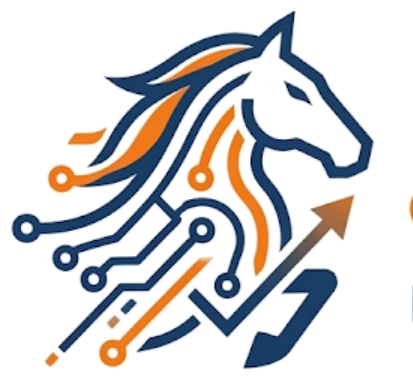

نفهم التحدي، نرسم الاتجاه، ونبني لك حضورًا وتجربةً ونظامًا رقميًا يعمل لهدفك — لا لمجرد الظهور.
لست بحاجة إلى خدمة أخرى… بل إلى الخطوة الصحيحة التالية.

لا نصنّف العملاء بحجم المشروع؛ نصنّف طريقة الشراء حسب طبيعة الاحتياج نفسه.
مشكلة محددة، شراء مباشر، تسليم سريع.
اشتراك شهري متكرر، قدرة تشغيلية مستمرة.
بعد تشخيص، للتحولات الاستراتيجية الكبرى.
أربع خطوات بسيطة من أول تواصل إلى تسليم النتيجة.
تتحدث مع سارة أو تطلب مباشرة إذا كان احتياجك واضحًا.
حل جاهز، أو شراكة نمو، أو حل مخصص — حسب طبيعة احتياجك.
فريق فارس ينفذ العمل ضمن الجدول والسعر المتفق عليهما من البداية.
نقترح عليك الخطوة التالية المنطقية بناءً على ما تم إنجازه.
تسعير واضح من أول لحظة، بلا "اطلب عرض سعر" ولا انتظار.
من الهوية البصرية إلى المواقع والمتاجر والأتمتة والمحتوى والتدريب.
حل جاهز لتسليم سريع، شراكة نمو لاستمرارية شهرية، حل مخصص للتحولات الكبرى.
مستشارة رقمية توجّهك للمسار الأنسب خلال دقيقة، مع مسار مباشر بديل دائمًا.
لا نبيعك خدمة أخرى؛ نبني معك الخطوة الصحيحة التالية.
سارة تفهم احتياجك… وفريق فارس يبني لك الحل.
سارة مستشارة رقمية تعطيك تشخيصًا أوليًا سريعًا وتوجّهك للمسار الأنسب. دائمًا يوجد مسار مباشر بديل مع فريقنا.
مثال على سؤال سارة: وش احتياجك الأساسي حاليًا؟
نفضّل عدم عرض أي شهادة أو رقم غير موثّق. بمجرد توفر حالات نجاح حقيقية مع تفاصيلها الكاملة، ستظهر هنا.
سجّل عملاءك وفريقنا ينفّذ — بعمولة ثابتة وشفافة على كل دفعة ناجحة.
سارة ليست الطريق الإجباري الوحيد — تقدر تراسل فريقنا مباشرة بأي وقت.
يراجع فريقنا طلبك ويرد عليك بأقرب وقت مناسب بالمسار الأنسب لاحتياجك.
هذا نموذج أولي ضمن مرحلة النموذج التجريبي الحالية — لا يوجد اتصال فعلي بخادم بعد.
وش احتياجك الأساسي حاليًا؟
تمام، وأنسب وصف لتوقيتك؟
هذا تشخيص أولي مبسّط لتوجيهك للمسار الأنسب فقط. أو تواصل مباشرة مع الفريق.